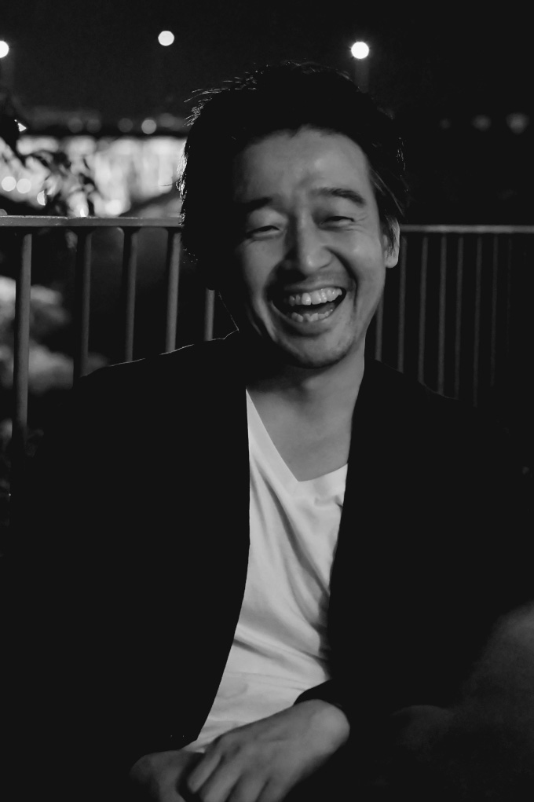
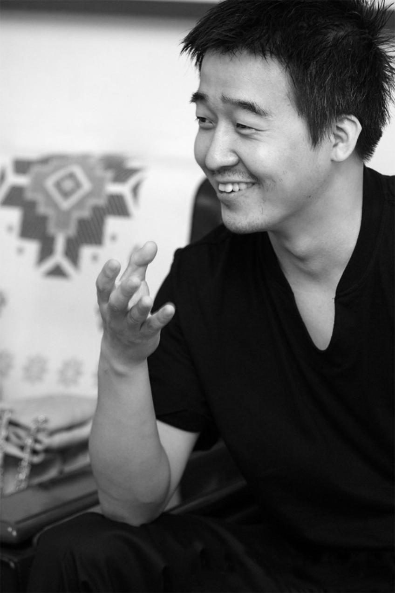

-광고천재 이제석-

대구에서 태어난 이 대표는 어려서부터 그림을 좋아했지만 학업 성적이 좋지는 않았다. 우여곡절 끝에 지역 대학교의 시각디자인과에 입학해 신입생 때부터 국내 유명 대학생 광고제에 꾸준히 도전했지만 작은 상하나 타지 못했다. 4년 평점 4,47로 수석 졸업 후 수많은 기업에 지원서를 넣었지만 그 어느 곳에서도 그를 찾지 않았다. 동네 간판 가게에서 조차 그 능력을 인정받지 못한 채 자신의 살길은 유학이라며 홀연히 미국으로 떠난 이 대표는 2006년 9월 뉴욕 ‘스쿨 오브 비주얼 아츠(School of Visual Arts)’에 편입하며 인생의 전환기를 마련한다. 이때부터 광고 공모전 사냥꾼답게 유수의 국제 광고제에서 1년간 29개의 메달을 따게 된다. 현지 기업들의 끊임없는 러브콜은 당연한 결과였다. 미국서 가장 큰 광고회사인 JWT를 비롯해 메이저급 회사인 BBDO, FCB 등 6군데 회사를 다니며 승승장구하던 그는 모두가 부러워하는 회사를 스스로 박차고 자신이 하고 싶은 광고를 하겠다며 2009년 ‘이제석광고연구소’를 세우며 홀연히 한국으로 귀국했다.
광고천재로 잘 알려져 있지만 스스로 광고쟁이라는 국내 대표 광고인. 상업적 영리 추구보다는 전체 업무의 90% 이상을 비영리, 공익 광고 캠페인에 비중을 두는 ‘이제석 광고연구소’를 운영하고 있다. 대기업을 위한 상업 광고보다는 비영리 NGO 단체들이나 정부, 국가 기관들과 함께 환경, 기아, 자살, 마약, 폭력 문제 등과 같은 인류가 처한 범국가적 문제에 대한 계몽적 공익광고 캠페인들을 국내외에서 활발히 전개 하고 있다. 쉽고 단순한 ‘시각 언어’로 언어와 국경을 초월하는 소통 방식을 사용한다. 기성 광고시장에서는 찾아볼 수 없었던 혁신적이고 기발한 제작기법들을 통해 광고를 대중호, 이슈화, 시키는 탁월한 능력을 보이고 있다.
